Here is our plan for designing a set of wrapper classes that abstract away the details of using the NLTokenizer class:
Before we begin, make sure to add these import statements at the top of your file:
import Foundation
import NaturalLanguage
Next, we will define a base class BaseTokenizer, which will provide some basic functionality for the more specialized tokenizers that we define later. We also want to abstract away some of the unpleasant details involved in working with NLTokenizer methods directly.
class BaseTokenizer{
}
Inside the curly braces for our class definition, let's define a stored property text, which will store the text sample that we want to break up into different kinds of tokens, such as words, sentences, and paragraphs:
//A stored property for the text that we want to tokenize
let text: String
After we define the stored property, we need an initializer:
//The initializer for our base class takes a sample text as an argument
init(text: String) {
self.text = text
}
Next, let's define a computed property that will represent the range of string indices for the entire text, starting from the startIndex of the text (which is the index for the first character in the text) to the endIndex, which is the index after the last character in the text):
//Computed Helper Property -- The string.index range for the full sample text
var fullTextRange: Range<String.Index>{
return text.startIndex..<text.endIndex
}
Let's define another computed property for the NLTokenUnit (i.e. word, sentence, paragraph) that will be used to configure the tokenizer that we define in our class:
//Computed helper property -- The token unit for initializing our tokenizer will be .word by default, but we can override this later
var tokenUnit: NLTokenUnit{
return NLTokenUnit.word
}
The initializer for NLTokenizer takes an NLTokenUnit. For the computer property defined above, we return an NLTokenUnit of type .word, but we can override this when we define subclasses that inherit from BaseTokenizer later on:
//A lazily defined tokenizer allows us to instantiate an NLTokenizer that can be initialized with the sample text that we are tokenizing and the default NLToken units
lazy var tokenizer: NLTokenizer = {
let tokenizer = NLTokenizer(unit: self.tokenUnit)
tokenizer.string = self.text
return tokenizer
}()
Let's also define a typealias for a completion handler in which we pass in a single argument: an array of strings. This completion handler is a callback that gets called when the entire array of word tokens becomes fully available after tokenization is completed:
typealias TokenCompletionHandler = ([String])->Void
The bread-and-butter of this base class will be a method that we call parseTokens, which takes a completion handler in which we will pass the array of word tokens that we get from the text. This method will be wrapper for one of NLTokenizer's instance methods enumerateTokens(in:using:)
func parseAllTokens(withCompletionHandler completion: TokenCompletionHandler){
var tokens = [String]()
self.tokenizer.enumerateTokens(in: self.fullTextRange, using: {
tokenRange, _ in
if let token = self.text.getSubString(fromRange: tokenRange){
tokens.append(token)
}
return true
})
completion(tokens)
}
Now let's look at all of the subclasses that inherit from BaseTokenizer:
Each subclass will override the computer property tokenUnit. The ParagraphTokenizer subclass uses a value of NLTokenUnit.paragraph, while the SentenceTokenizer subclass useas a value of NLTokenUnit.sentence:
override var tokenUnit: NLTokenUnit{
return NLTokenUnit.paragraph
}
Here is the ParagraphTokenizer subclass:
class ParagraphTokenizer:BaseTokenizer{
override var tokenUnit: NLTokenUnit{
return NLTokenUnit.paragraph
}
func parseAllParagraphTokens() -> [String]{
var paragraphTokens = [String]()
parseAllTokens() {
paragraphs in
paragraphTokens.append(contentsOf: paragraphs)
}
return paragraphTokens
}
}
Here is the SentenceTokenizer subclass:
class SentenceTokenizer:BaseTokenizer{
override var tokenUnit: NLTokenUnit{
return NLTokenUnit.sentence
}
func parseAllSentenceTokens() -> [String]{
var sentenceTokens = [String]()
parseAllTokens(){
sentences in
sentenceTokens.append(contentsOf: sentences)
}
return sentenceTokens
}
}
Finally, here is the WordTokenizer subclass
class WordTokenizer: BaseTokenizer{
override var tokenUnit: NLTokenUnit{
return super.tokenUnit
}
func parseAllWordTokens() -> [String]{
var tokens = [String]()
parseAllTokens() {
words in
tokens.append(contentsOf: words)
}
return tokens
}
}
Each subclass calls the parseTokens methods that we defined in the base class. In SentenceTokenizer, we define a method called parseSentences whose completion handler gets passed an array of sentence tokens. In ParagraphTokenizer, we define a method called parseParagraphs whose completion handler gets passed an array of paragraph tokens.